Next: initialize a 2d array Up: Java Arrays Previous: Looping Through Array Elements Contents
Arrays we have mentioned till now are called one-dimensional arrays. However, we can declare multidimensional arrays in Java. A multidimensional array is an array of arrays. That is, each element of a multidimensional array is an array itself. For example,

Here, we have created a multidimensional array named matrix. It is a 2-dimensional array. To learn more, visit the Java multidimensional array. A multidimensional array is an array of arrays. Each element of a multidimensional array is an array itself. For example,
Here, we have created a multidimensional array named a. It is a 2-dimensional array, that can hold a maximum of 12 elements. Remember, Java uses zero-based indexing, that is, indexing of arrays in Java starts with 0 and not 1. Let's take another example of the multidimensional array. This time we will be creating a 3-dimensional array. For example,
Here, data is a 3d array that can hold a maximum of 24 (3*4*2) elements of type String.